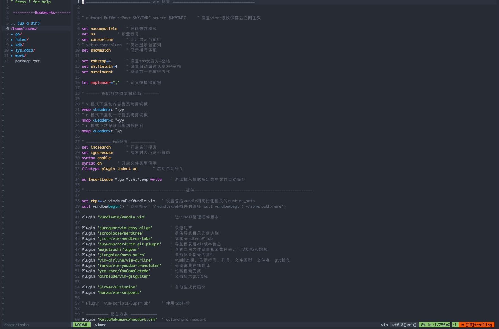

vim 美化及配置 链接到标题

安装 vundle 插件管理器 链接到标题
git clone https://github.com/VundleVim/Vundle.vim.git ~/.vim/bundle/Vundle
安装 YCM 链接到标题
YouCompleteMe 是一款为 vim 的自动补全插件，可以支持不同的语言。
# 需要有 cmake clang python3 环境
git clone https://github.com/Valloric/YouCompleteMe.git ~/.vim/bundle/
cd ~/.vim/bundle/YouCompleteMe/
# 下载依赖，最好配代理
git submodule update --init --recursive
# 安装语法补全
./install.sh --clang-completer # CPP
./install.sh --gocode-completer # golang
./install.sh --java-completer # java
./install.sh --ts-completer # ts
./install.sh --rust-completer # rust
配置 vimrc 链接到标题
" ============================= vim 配置 =====================================
" autocmd BufWritePost
$MYVIMRC source $
MYVIMRC " 设置vimrc修改保存后立刻生效
set nocompatible " 关闭兼容模式
set nu " 设置行号
set cursorline " 突出显示当前行
" set cursorcolumn " 突出显示当前列
set showmatch " 显示括号匹配
set tabstop=4 " 设置tab长度为4空格
set shiftwidth=4 " 设置自动缩进长度为4空格
set autoindent " 继承前一行缩进方式
let mapleader=";" " 定义快捷键前缀
" ====== 系统剪切板复制粘贴 =======
" v 模式下复制内容到系统剪切板
vmap <Leader>c "+yy
" n 模式下复制一行到系统剪切板
nmap <Leader>c "+yy
" n 模式下粘贴系统剪切板内容
nmap <Leader>c "+p
" =========== tab配置 ===========
set incsearch " 开启实时搜索
set ignorecase " 搜索时大小写不敏感
syntax enable
syntax on " 开启文件类型侦测
filetype plugin indent on " 启动自动补全
au InsertLeave
*.go,*
.sh,*.php write " 退出插入模式指定类型文件自动保存
" =============================================插件=====================================================
set rtp+=~/.vim/bundle/Vundle.vim " 设置包括vundle和初始化相关的runtime_path
call vundle#begin() " 或者指定一个vundle安装插件的路径 call vundle#begin('~/some/path/here')
Plugin 'VundleVim/Vundle.vim' " 让vundel管理插件版本
Plugin 'junegunn/vim-easy-align' " 快速对齐
Plugin 'scrooloose/nerdtree' " 提供导航目录的侧边栏
Plugin 'jistr/vim-nerdtree-tabs' " 优化nerdtree的tab
Plugin 'Xuyuanp/nerdtree-git-plugin' " 导航目录看git版本信息
Plugin 'majutsushi/tagbar' " 查看当前文件变量和函数列表，可以切换和跳转
Plugin 'jiangmiao/auto-pairs' " 自动补全括号的插件
Plugin 'vim-airline/vim-airline' " vim状态栏，显示行号、列号，文件类型，文件名，git状态
Plugin 'ianva/vim-youdao-translater' " 有道词典在线翻译
Plugin 'ycm-core/YouCompleteMe' " 代码自动完成
Plugin 'airblade/vim-gitgutter' " 文档显示git信息
Plugin 'SirVer/ultisnips' " 自动生成代码块
Plugin 'honza/vim-snippets'
" Plugin 'vim-scripts/SuperTab' " 使用tab补全
" ========== 配色方案 ============
Plugin 'KeitaNakamura/neodark.vim' " colorcheme neodark
Plugin 'crusoexia/vim-monokai' " colorcheme monokai
Plugin 'acarapetis/vim-colors-github' " colorcheme github
Plugin 'rakr/vim-one' " colorcheme one
" ========== go 插件 =============
Plugin 'fatih/vim-go'
Plugin 'dgryski/vim-godef' " go代码追踪，输入gd自动跳转
" ========== markdown 插件 =======
Plugin 'iamcco/mathjax-support-for-mkdp'
Plugin 'iamcco/markdown-preview.vim'
call vundle#end()
" =================== 主题配色 =========================
set termguicolors " 开启24bit颜色
colorscheme one " 选用主题
set background=dark " 主题背景
" =================== vim-go插件 =======================
autocmd BufWritePre *.go :silent! %!gofmt " 自动格式化go代码
let g:go_fmt_command = "goimports" " 格式化将默认的 gofmt 替换
let g:go_autodetect_gopath = 1
let g:go_list_type = "quickfix"
let g:go_version_warning = 1
let g:go_highlight_types = 1
let g:go_highlight_fields = 1
let g:go_highlight_functions = 1
let g:go_highlight_function_calls = 1
let g:go_highlight_operators = 1
let g:go_highlight_extra_types = 1
let g:go_highlight_methods = 1
let g:go_highlight_generate_tags = 1
let g:godef_split=2
" ========================= nerd tree 插件 ======================
" 打开和关闭NERDTree快捷键
map <F10> :NERDTreeToggle<CR>
" 显示行号
let NERDTreeShowLineNumbers=1
" 打开文件时是否显示目录
let NERDTreeAutoCenter=1
" 是否显示隐藏文件
let NERDTreeShowHidden=0
" 设置宽度
" let NERDTreeWinSize=31
" 忽略一下文件的显示
let NERDTreeIgnore=['\.pyc','\~$','\.swp']
" 打开 vim 文件及显示书签列表
let NERDTreeShowBookmarks=2
" 在终端启动vim时，共享NERDTree
let g:nerdtree_tabs_open_on_console_startup=1
"==============================================================================
" majutsushi/tagbar 插件
"==============================================================================
" majutsushi/tagbar 插件打开关闭快捷键
nmap <F9> :TagbarToggle<CR>
let g:tagbar_type_go = {
\ 'ctagstype' : 'go',
\ 'kinds' : [
\ 'p:package',
\ 'i:imports:1',
\ 'c:constants',
\ 'v:variables',
\ 't:types',
\ 'n:interfaces',
\ 'w:fields',
\ 'e:embedded',
\ 'm:methods',
\ 'r:constructor',
\ 'f:functions'
\ ],
\ 'sro' : '.',
\ 'kind2scope' : {
\ 't' : 'ctype',
\ 'n' : 'ntype'
\ },
\ 'scope2kind' : {
\ 'ctype' : 't',
\ 'ntype' : 'n'
\ },
\ 'ctagsbin' : 'gotags',
\ 'ctagsargs' : '-sort -silent'
\ }
"==============================================================================
" nerdtree-git-plugin 插件
"==============================================================================
let g:NERDTreeGitStatusIndicatorMapCustom = {
\ "Modified" : "✹",
\ "Staged" : "✚",
\ "Untracked" : "✭",
\ "Renamed" : "➜",
\ "Unmerged" : "═",
\ "Deleted" : "✖",
\ "Dirty" : "✗",
\ "Clean" : "✔︎",
\ 'Ignored' : '☒',
\ "Unknown" : "?"
\ }
let g:NERDTreeGitStatusShowIgnored = 1
"==============================================================================
" Valloric/YouCompleteMe 插件
"==============================================================================
set runtimepath+=~/.vim/bundle/YouCompleteMe
let g:ycm_collect_identifiers_from_tags_files = 1 " 开启 YCM 基于标签引擎
" let g:syntastic_ignore_files=[".*\.py$"]
let g:ycm_seed_identifiers_with_syntax = 1 " 语法关键字补全
let g:ycm_complete_in_comments = 1
let g:ycm_confirm_extra_conf = 0
" let g:ycm_key_list_select_completion = ['<c-n>', '<Down>'] " 映射按键, 没有这个会拦截掉tab, 导致其他插件的tab不能用.
" let g:ycm_key_list_previous_completion = ['<c-p>', '<Up>']
" let g:ycm_complete_in_comments = 1 " 在注释输入中也能补全
" let g:ycm_complete_in_strings = 1 " 在字符串输入中也能补全
" let g:ycm_collect_identifiers_from_comments_and_strings = 1 " 注释和字符串中的文字也会被收入补全
let g:ycm_global_ycm_extra_conf='~/.vim/bundle/YouCompleteMe/third_party/ycmd/.ycm_extra_conf.py'
" let g:ycm_show_diagnostics_ui = 0 " 禁用语法检查
" inoremap <expr> <CR> pumvisible() ? "\<C-y>" : "\<CR>" | " 回车即选中当前项
" nnoremap <c-j> :YcmCompleter GoToDefinitionElseDeclaration<CR>| " 跳转到定义处
let g:ycm_min_num_of_chars_for_completion=2 " 从第2个键入字符就开始罗列匹配项
" make YCM compatible with UltiSnips (using supertab)
let g:ycm_key_list_select_completion = ['<C-n>', '<space>']
let g:ycm_key_list_previous_completion = ['<C-p>', '<Up>']
let g:SuperTabDefaultCompletionType = '<C-n>'
" better key bindings for UltiSnipsExpandTrigger
let g:UltiSnipsExpandTrigger = "<tab>"
let g:UltiSnipsJumpForwardTrigger = "<tab>"
let g:UltiSnipsJumpBackwardTrigger = "<s-tab>"
"==============================================================================
" 其他插件配置
"==============================================================================
" markdwon 的快捷键
map <silent> <F5> <Plug>MarkdownPreview
map <silent> <F6> <Plug>StopMarkdownPreview
" tab 标签页切换快捷键
:nn <Leader>1 1gt
:nn <Leader>2 2gt
:nn <Leader>3 3gt
:nn <Leader>4 4gt
:nn <Leader>5 5gt
:nn <Leader>6 6gt
:nn <Leader>7 7gt
:nn <Leader>8 8gt
:nn <Leader>9 8gt
:nn <Leader>0 :tablast<CR>
"==============================================================================
" GVim 的配置
"==============================================================================
" 如果不使用 GVim ，可以不用配置下面的配置
if has('gui_running')
colorscheme one
" 设置启动时窗口的大小
set lines=999 columns=999 linespace=4
" 设置字体及大小
set guifont=Roboto\ Mono\ 13
set guioptions-=m " 隐藏菜单栏
set guioptions-=T " 隐藏工具栏
set guioptions-=L " 隐藏左侧滚动条
set guioptions-=r " 隐藏右侧滚动条
set guioptions-=b " 隐藏底部滚动条
" 在 gvim 下不会和 terminal 的 alt+数字的快捷键冲突，
" 所以将 tab 切换配置一份 alt+数字的快捷键
:nn <M-1> 1gt
:nn <M-2> 2gt
:nn <M-3> 3gt
:nn <M-4> 4gt
:nn <M-5> 5gt
:nn <M-6> 6gt
:nn <M-7> 7gt
:nn <M-8> 8gt
:nn <M-9> 9gt
:nn <M-0> :tablast<CR>
endif
vim 操作 链接到标题
Ctrl + W + H ： Focus 在左边窗口
Ctrl + W + L ： Focus 在右边窗口
:ter # 打开终端
:ter ++rows=2 # 以特定高度/行数打开
# 切换到tab栏，通过m键呼出文件管理菜单
nerdtree 操作
ctrl + w + h 光标 focus 左侧树形目录
ctrl + w + l 光标 focus 右侧文件显示窗口
ctrl + w + w 光标自动在左右侧窗口切换
ctrl + w + r 移动当前窗口的布局位置
o 在已有窗口中打开文件、目录或书签，并跳到该窗口
go 在已有窗口 中打开文件、目录或书签，但不跳到该窗口
t 在新 Tab 中打开选中文件/书签，并跳到新 Tab
T 在新 Tab 中打开选中文件/书签，但不跳到新 Tab
i split 一个新窗口打开选中文件，并跳到该窗口
gi split 一个新窗口打开选中文件，但不跳到该窗口
s vsplit 一个新窗口打开选中文件，并跳到该窗口
gs vsplit 一个新 窗口打开选中文件，但不跳到该窗口
! 执行当前文件
O 递归打开选中 结点下的所有目录
m 文件操作：复制、删除、移动等
:tabnew [++opt选项] ［＋cmd］ 文件 建立对指定文件新的tab
:tabc 关闭当前的 tab
:tabo 关闭所有其他的 tab
:tabs 查看所有打开的 tab
:tabp 前一个 tab
:tabn 后一个 tab
标准模式下：
gT 前一个 tab
gt 后一个 tab
?: 快速帮助文档
x: 收起当前打开的目录
X: 收起所有打开的目录
e: 以文件管理的方式打开选中的目录
D: 删除书签
P: 大写，跳转到当前根路径
p: 小写，跳转到光标所在的上一级路径
K: 跳转到第一个子路径
J: 跳转到最后一个子路径
<C-j>和<C-k>: 在同级目录和文件间移动，忽略子目录和子文件
C: 将根路径设置为光标所在的目录
u: 设置上级目录为根路径
U: 设置上级目录为跟路径，但是维持原来目录打开的状态
r: 刷新光标所在的目录
R: 刷新当前根路径
I: 显示或者不显示隐藏文件
f: 打开和关闭文件过滤器
q: 关闭NERDTree
A: 全屏显示NERDTree，或者关闭全屏
安装插件 链接到标题
# 进入vim
vim
# 安装插件
:PluginInstall
# 安装go插件
:GoInstallBinaries
# tagbar插件需要ctags/gotags支持
yay -S ctags # manjaro系统可以通过yay包管理安装
go get -u github.com/jstemmer/gotags